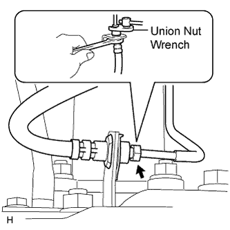
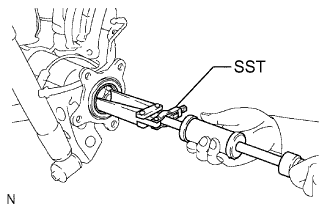

REAR AXLE SHAFT > REMOVAL |
| 1. REMOVE STABILIZER CONTROL VALVE PROTECTOR (w/ KDSS) |
 |
Detach the clamp, and disconnect the connector from the protector.
Remove the 3 bolts and protector.
| 2. OPEN STABILIZER CONTROL WITH ACCUMULATOR HOUSING SHUTTER VALVE (w/ KDSS) |
Using a 5 mm hexagon socket wrench, loosen the lower and upper chamber shutter valves of the stabilizer control with accumulator housing 2.0 to 3.5 turns.

| 3. DISCONNECT CABLE FROM NEGATIVE BATTERY TERMINAL |
| 4. REMOVE REAR WHEEL LH |
| 5. DRAIN BRAKE FLUID |
| 6. DISCONNECT REAR BRAKE FLEXIBLE HOSE |
 |
Disconnect the brake tube from the flexible hose with SST while holding the flexible hose with a wrench.
Remove the clip.
| 7. DISCONNECT REAR DISC BRAKE CYLINDER ASSEMBLY LH |
 |
Remove the 2 bolts and disconnect the rear disc brake cylinder.
| 8. REMOVE REAR DISC LH |
 |
Put matchmarks on the rear disc and axle hub if planning to reuse the disc.
 |
Turn the shoe adjuster as shown in the illustration until the disc turns freely, and then remove the disc.
| 9. REMOVE PARKING BRAKE SHOE RETURN TENSION SPRING LH |
 |
Using SST, remove the return spring.
| 10. REMOVE NO. 1 PARKING BRAKE SHOE ASSEMBLY LH |
 |
Using SST, remove the shoe hold down spring cup, compression spring and shoe hold down spring pin.
 |
Disconnect the tension spring from the No. 1 parking brake shoe.
 |
Remove the No. 1 parking brake shoe and shoe adjuster screw set.
| 11. REMOVE NO. 2 PARKING BRAKE SHOE ASSEMBLY LH |
 |
Using SST, remove the shoe hold down spring cup, compression spring and shoe hold down spring pin.
Remove the No. 2 parking brake shoe.
| 12. REMOVE PARKING BRAKE SHOE LEVER SUB-ASSEMBLY LH |
Disconnect the No. 3 parking brake cable from the parking brake shoe lever.
 |
Remove the parking brake shoe lever.
| 13. DISCONNECT NO. 3 PARKING BRAKE CABLE ASSEMBLY |
 |
Remove the bolt and No. 3 parking brake cable.
| 14. DISCONNECT REAR SPEED SENSOR LH |
 |
Remove the nut and speed sensor.
| 15. REMOVE REAR AXLE SHAFT LH |
 |
Remove the 4 nuts and rear axle shaft together with the parking brake plate.
Remove the O-ring.
| 16. REMOVE REAR AXLE SHAFT OIL SEAL LH |
 |
Using SST, tap out the oil seal.